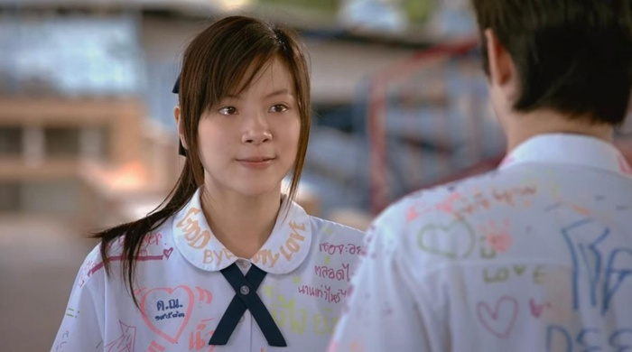
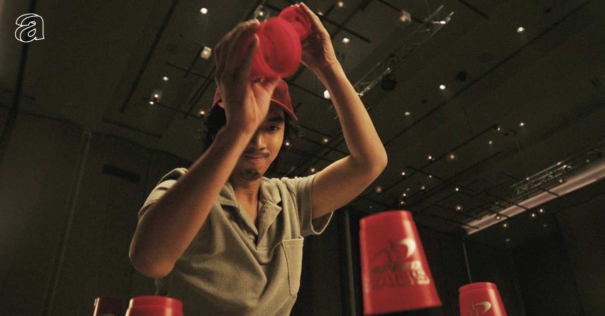
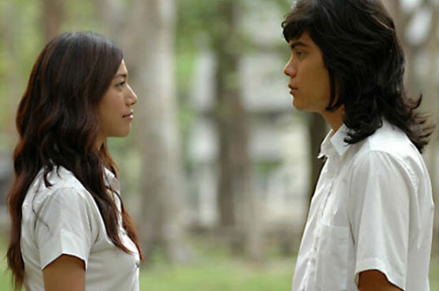
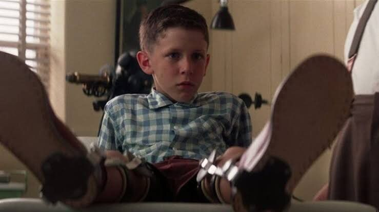
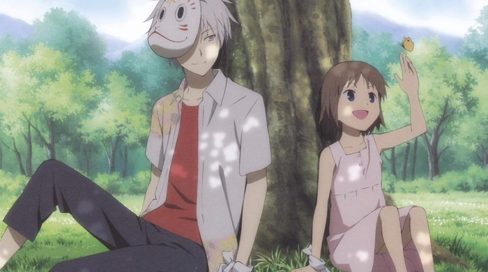

About Us
จุดเริ่มต้นของความชอบ
ความหลงไหลและความประทับใจที่มีต่อตัวละคร
เพราะสิ่งที่ตัวละครทิ้งไว้กับเราไม่ได้มีเพียงแค่ความสนุก
THE BEGINNING

ทุกครั้งที่ดูภาพยนตร์หรือแอนิเมชัน เรามักจะได้พบกับตัวละครมากมาย บางตัวละครอาจผ่านเข้ามาในเรื่องราวเพียงช่วงเวลาหนึ่ง แต่กลับเป็นตัวละครที่เรายังคงจดจำได้ แม้เวลาจะผ่านไปนานแล้วก็ตาม บางครั้งเราอาจไม่ได้จดจำเรื่องราวทั้งหมดของภาพยนตร์เรื่องนั้น แต่กลับจำคำพูด การกระทำ หรือความรู้สึกบางอย่างที่ตัวละครตัวหนึ่งเคยทำให้เราได้รับ นั่นจึงกลายเป็นจุดเริ่มต้นของการสร้างคอลเลกชันนี้

WHY CHARACTERS?
Every character has a story to tell
สำหรับฉัน ตัวละครไม่ได้เป็นเพียงส่วนหนึ่งของภาพยนตร์ แต่เป็นเหมือนตัวแทนของเรื่องราว ความรู้สึก
ละช่วงเวลาบางช่วงในชีวิต
มีตัวละครบางตัวที่ทำให้เรายิ้ม บางตัวทำให้เราเข้าใจอะไรบางอย่างมากขึ้น
และบางตัวก็ทำให้เรานึกถึงความทรงจำที่เคยเกิดขึ้นกับตัวเอง
ฉันจึงอยากรวบรวมตัวละครที่ตัวเองชื่นชอบ ไม่ใช่เพียงเพราะพวกเขาเป็นตัวละครที่น่าสนใจ
แต่เพราะแต่ละคนมีบางอย่างที่ทำให้ฉันยังจดจำพวกเขาได้จนถึงวันนี้

THE CONCEPT
Characters That Stay Memories
แนวคิดของเว็บไซต์นี้เกิดจากความรู้สึกที่ว่า แม้ภาพยนตร์จะจบลง แต่ตัวละครบางตัวกลับไม่ได้หายไปพร้อมกับตอนจบของเรื่องราว
เว็บไซต์นี้จึงถูกออกแบบให้เป็นพื้นที่สำหรับรวบรวมตัวละครจากภาพยนตร์ไทย ภาพยนตร์ต่างประเทศ และแอนิเมชัน
ที่มีความหมายและยังคงอยู่ในความทรงจำของฉัน
แต่ละตัวละครจะมีพื้นที่ในการเล่าเรื่องราว บุคลิก และเหตุผลที่ทำให้พวกเขากลายเป็นส่วนหนึ่งของคอลเลกชันนี้
THE PURPOSE
Because some stories end, but some characters stay

ฉันอยากให้เว็บไซต์นี้เป็นมากกว่าพื้นที่รวบรวมรูปภาพหรือข้อมูลตัวละคร แต่เป็นเหมือนบันทึกความทรงจำส่วนตัวที่ถ่ายทอดผ่านตัวละครจากเรื่องราวต่าง ๆและหวังว่าเมื่อใครสักคนได้เข้ามาเยี่ยมชม อาจทำให้นึกถึงตัวละครที่ตัวเองเคยชื่นชอบ หรือค้นพบตัวละครใหม่ ๆ ที่มีความหมายกับตัวเองเช่นกัน
